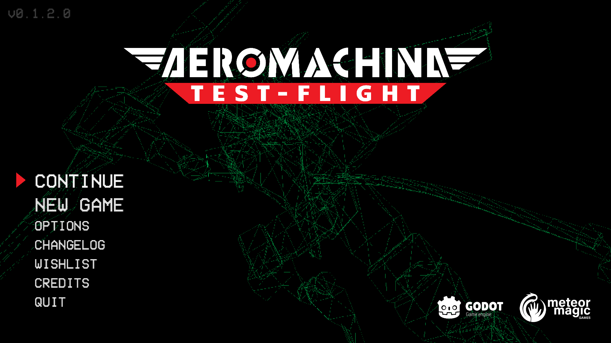
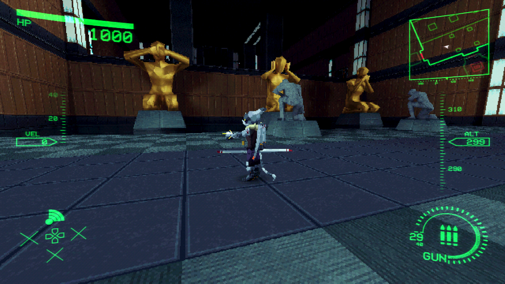
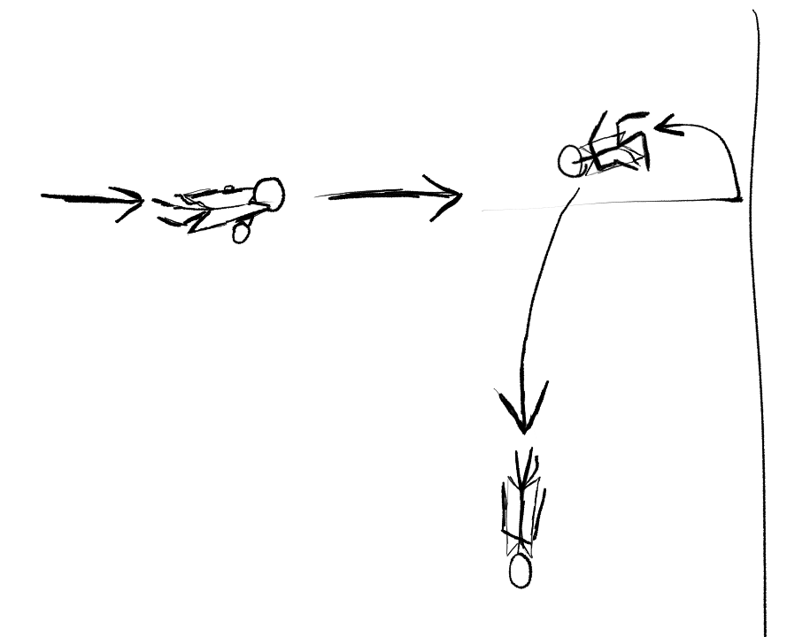
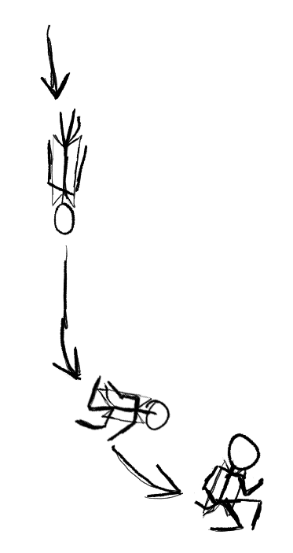
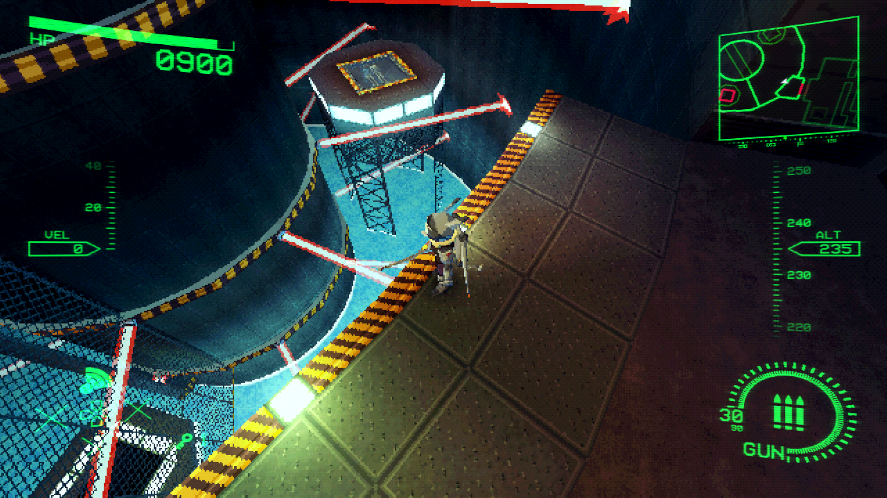

I swear I’m not trying to play all the furry game demos on Steam, it’s just easier to write about little indie game demos. Someday I’ll finish the article on Earth Must Die I swear.
The One Paragraph Pitch
In case you didn’t know…
AEROMACHINA is an action/adventure game with a focus on platforming sections. You play as an android robot in the shape of a humanoid plane, earning gear to glide through more and more complex platforming segments. All the while, you beat up robots.
I Am Not Immune to Tail Propaganda
So like, Plane furries. You know the ones. The ones that are like jets or space shuttles that still have arms and legs and eyes? I don’t really get the aesthetic appeal but I definitely can see where the idea of a plane-person can make for cool video game designs.
I caught the game in a passing glimpse on Twitch.TV. My attention was drawn by the gameplay, reminding me a lot of Ratchet & Clank: Going Commando, one of my childhood favorite video games. My attention was kept when I noticed the character design, with its wings and thrusters. It was a fun looking game and I stopped watching solely because I realized it was a demo that I should be trying myself. I love a good combat platformer, and just imagine all the cool abilities a plane character could do when Ratchet could already do side flips, thruster boosts, and more!
So yes, I will fully admit that the fact the plane bat thing had a cute long tail is what suckered me in. I was intrigued by the classic platformer influence and the hook caught my mouth when I saw that tail. Sue me.
From Out Of Time, in Outer Space… Plane Furry

AEROMACHINA’s in a weird aesthetic place if you ask me. The game looks like Tiny Tank and feels like Ratchet & Clank, yet despite the PlayStation influence the game plays like The Legend of Zelda. It’s a secretly-linear dungeon with interlocking rooms where you find keys and solve switch puzzles to progress through. The platforming makes it a little more interesting than your usual Zelda fare, at least, but the fact that the game outright has Z-Targeting and a Navi-style comms interface makes the game wear its influence on its sleeves in a way that’s really hard to ignore. Your first power-up even has “Varia” in the name and plays a Metroid inspired jingle, as if you needed more evidence of where the developers were inspired.
Beyond the influence, it’s almost so much it’s own thing, a product that purposefully feels like it can’t be tied down to a specific era beyond “classic”, that the Godot Indie Game Staple Postprocessing Trifecta™ of vertex clamping, resolution downscaling, and a pixelation filter feel very unnecessary here. You can turn them off. I didn’t do that out of respect of the artistic vision, but I don’t think this game would look particularly less visually distinct if it had shipped with standard resolution textures designed for bilinear filtering.
Not Those Kinds of Dogfights. Not Those Ones Either, Shut Up
I’m not particularly jazzed about the combat. You mash and eventually the thing you’re mashing in front of falls apart. I expected a game about a plane furry to have a bit more, you know, plane-y things to do to your opponents like ramming headbutts or high-flying high-damage grapples.
There are very few cool tricks like canceling or combos beyond the basic 4-hit combo you do on everyone. It’s not a dealbreaker, but I can’t decide if “mash while you have an opening and press at the right time when you don’t” is a combat system I like better than the whiff-punish swordplay in Zelda - a game that has the opposite problem where everyone gets mercy invincibility after a single hit but you can perform a three-hit sword combo for… some reason.
You get a Vulcan machine gun halfway through the demo. It’s mostly used to hit switches, like how you use the bow in Ocarina of Time. You can use it during combat, but the damage is low enough and reloading is frequent enough that you are discouraged from doing so in favor of melee combos. Its best combat use is to interrupt the attack animation of a faraway enemy inbetween melee combos against a nearby one.
Later, the game gives you a ground-slam ability. Seemingly tacked onto it is what the game calls the “catapult kick.” You can press while grounded to knock an opponent away. You would think this would be so you could knock enemies into environmental hazards, but there are only a few bottomless pits occasionally placed on certain specific encounters, and even then most of the time the enemies are placed pretty far from the pits.
If I want to knock an opponent into something, the four-hit combo not only has faster startup, stuns them for the duration, can be canceled at any point, and knocks the enemy away the same distance, but also does more damage than the kick. Why on earth would I want to kick an opponent away from me when I have the capability to dodge out of it’s range with no startup or recovery, or stun it with the gun for crowd control?
I have to assume it was added because the developers wanted you to unlock something combat related with each upgrade, but in practice it feels like a half baked idea.
The Legend Of Zelda is not a very difficult game franchise, for sure. The game famously litters dungeons with pots to drop recovery hearts.1 Death is mostly an inconvenience of time and execution - the puzzles stay solved but you gotta get back to them. If you’re modeling your game off of Zelda then I’m not about to harp on the fact that it doesn’t really have stakes.
What I didn’t expect was for it to have less stakes.
Death is Cheap But Nobody’s Buying
A quick tangent to illustrate my gripe: you ever played Chex Quest?
There’s a very different vibe between how Doom and Doom 2 handles health pickups and how Chex Quest does it. Being made with much younger kids in mind, Chex Quest tries to make sure the player always has at least full health before any combat encounter. Bowls of Vegetables (Medkits) are so common that, as a kid, I was always confused about how to collect them.
It makes combat encounters very low stakes. You have carte blanche to rush into combat. Ammo management tends to be the more explicit resource you need to worry about. This is a double edged sword. On the one hand it makes the game very easy, even on first time playthroughs. However, on the other hand it means the level designers are more confident throwing more intense encounters at you. You’re always going to have at least 100% health and likely some armor, why not just toss 4 Armored Bipedicus at you in an enclosed environment?
I get this feeling from AEROMACHINA as well, but the game doesn’t feel like it has the stones to ramp it up when it matters. Every single combat encounter feels like it is designed to make you enter and leave at full health, but isn’t properly scaled to provide difficulty equivalent to the player’s power. It’s a demo, sure, so I can’t expect the difficulty to be super crazy, but when the game keeps preceding every big fight with a lot of warning dialog about how difficult the encounter will be followed by a confirmation dialogue it makes the game feel toothless.
Video size: 6.35MB
The first time I fought this boss this kept happening. The second time, they kept shooting the pillar while standing right next to it, killing themselves in seconds.
3D Zelda games are often starved for rewards they can give the player on a regular basis. Removing the enemy tends to be its own reward rather than needing to drop currency, hearts or experience like other RPGs. Sometimes it opens a door, sometimes it reveals a chest, but most of the time the Skulltulla is just in your way and you want to go forward. Yet, AEROMACHINA gives out health pickups not just in boxes throughout little combat arenas but also directly as a drop from defeated enemies.
“Oh, so Daniel, clearly the resource management is present in the gun you mentioned earlier!” No actually they give you ammo in the same places they give you health and, as we previously mentioned, the gun isn’t great for combat anyway, so you will barely use the gun and always be refunded for what you do spend.
It leads to the sort of combat I experienced with Ultrakill. You don’t need to mitigate damage, watch projectiles, or time dodges as much as you would in most games. If you get in there and keep mashing the attack button you really just don’t die as the game throws more and more health in your pocket.6 And when you’re done with the combat encounter, there’s always tons of nearby health boxes to top yourself back up to 100% health.
In some situations, it wasn’t even prescient to try to avoid damage. There are these flying enemies who fire a volley of 3 bullets at you after a charge animation. The immediate visual implication is to use the dodge move to avoid the volleys when they occur, but the dodge move doesn’t provide invincibility frames (good, it shouldn’t) and the enemy gun tracks faster than the dodge can move you (annoying, I don’t think it should) so oftentimes I would just bumrush these flying enemies as a priority target, tanking the damage upfront and healing it all back from the aftermath.
Hell, the tanks explode when they die and I just didn’t bother worrying about it because they drop more health than the explosion does damage!
Video size: 19.1MB
Players aren’t pressured to self-preserve as much in AEROMACHINA. More kills means more health.
Not every platformer needs a crazy combat system, sure, but the game continuously puts you in small encounters versus a smattering of robots to fight, so it’s clear that the developers think it’s at least good enough to be a major feature of the game.
The combat and the platforming feel like two separate worlds. Landing on a platform and seeing enemies spawn felt like slowing the game down. Pressing the melee attack button stops your momentum so your combos can connect. You can’t shoot the gun while you’re gliding. The dash is perfectly distanced and speedy to maneuver quickly around every single combat encounter without trouble. The ground pound doesn’t do any damage and there’s no reason to do it when you can just land on the ground normally and start mashing again. Even using it to ground flying opponents isn’t as useful as simply flying up there and beating the tar out of them yourself.
The only place where the platforming and combat intersect is that you can do a preliminary attack by running into someone while using the afterburner. It stops your momentum and does a static amount of damage.
Now that I think about it, I don’t think any of the upgrades meaningfully change how you engage with combat besides the gun, and in that case it’s only because you can cheese bosses with the gun during moments where you can’t melee them.
I understand the AEROMACHINA boss is a puzzle boss, but this “second stage” sure had a lot of fanfare before I effortlessly jumped up to it and did this.
Second footage comes from the Ratchet & Clank: Going Commando Demo off the Jampack Winter 2003 demo disc. I wanted to provide a comparison for difficulty in a demo.
At Least the Plane Can Fly
I did feel very adequately challenged by the platforming segments - not that they were difficult, but that I felt like I was expressing prowess over the game mechanics by completing them. Dash-jumping is inherently very fun to do, and gliding around long ravines and solving switch puzzles with split-second gunshots on timed platforms was a blast.
Mastering the platforming can make you feel like the coolest plane furry on the planet.
You stop simply walking places very fast as soon as you realize bunnyhopping is possible.
Dashing hard-sets your velocity to 50. Walking has a velocity cap of 31. You don’t lose velocity while you’re in the air. You count as “in the air” for one frame after you land on the ground. Gliding lets you gain more speed the longer you do it while pitching down, and also gives you a longer “grace period” for counting as “in the air” when landing on the ground. After unlocking the afterburner, you can even get up to 200 velocity. Do the math.
It’s very satisfying to move from corridor to corridor by doing timed jumps bolstered with dashes and glides. I really, really like games where moving around is tons of fun - it’s why I like Super Mario 64 and Warframe so much - so this game definitely scratches good itches. I’m missing two collectables for 100% completion in my save, and when I booted the game to get footage and look for those collectables I often found myself going around in circles without really paying attention because movement is just so fluid.
It’s not perfect but it’s absolutely acceptable and masterable. The game doesn’t seem to have any “Coyote Time”2 so platforming can be a little precise. It’s incredibly easy to try to dash-jump off a ledge and accidentally eat your double jump in the process, but failure is a slap on the wrist so it never annoyed me.
Video size: 1.4MB
Some platforming segments can occasionally frustrate you through no fault of their own due to a few misinputs.
I just wish the two concepts were married a little better. Aside from a fight on top of a narrow maze of platforms above coolant (lava) there is exactly one (1) instance of the combat and the platforming coming together. A small warehouse segment requires you to climb a stack of boxes and switch platforms to reach the top, and halfway through you have to take out a flying enemy impeding your progress near the double jump upgrade. It’s a standout because it’s the only time this happens.
Go ham, guys! Put little flying guys accosting me on platforms that are switching between each other on a rhythm! Put a tank firing at me from a distance, requiring me to dodge its cannonballs while I balance on rolling logs, slowly getting closer so I can finally take him out! Do SOMETHING to make the robots and the boxes come together!
I Got These New Kicks
It’s important to note that while I’m describing the platforming with all the upgrades intact, the game nails player movement in one from the moment you pick up the controller.
By default your only movement option that isn’t walking, jumping, air-stalling with melee attacks, and hanging from ledges is your “dodge” move. It’s called a dodge in the game, but I keep calling it a dash or a boost, because it’s more useful to dash or boost with than to dodge with.
Controls are fluid in a way that any PS2-raised platformer kid could easily pick up and understand. I had some trouble with the early platforming segments before getting my first upgrades but they seemed more like a skill issue than a fault of the game.
On the subject of those upgrades, they feel very natural. It can be easy for this kind of game design to feel like the game is purposefully nerfing you of your entire kit before you can finally start playing the game as intended in the last 20 minutes. Rather than feeling anemic, the player feels just powerful enough from the outset and each new item is a fun boost in player power. The demo is well paced to give out the upgrades as it progresses and each new ability feels like a natural extension of your existing mechanics. When you glide through a long ravine that, previously, you had to perform some boost platforming tricks to get through, it doesn’t make you feel like the game was made for gliding. Instead, it makes you feel like you’re cooler than the old you who had to rely only on the boosting.
The upgrades do add up though.
Principle Of Animation Number 13: Plane Furry
Let me start by pulling my punch a bit. Most of the animation in this game is absolutely fine. Some of it is even stellar.
I think the enemy robots have the best animation in the game with their spinning parts, angry eyebrows, and multiple disparate appendages. Knocking a tank away and sending its turret spinning in confusion is fun. The little trails the mosquito guys leave as they try to zip just above your range is both good for gameplay and sells their fast motion. The bayonet guys, despite their status as goombas, look like they were a particular pet for a designer with how much attitude they have.
The player animation is perfectly acceptable for the most part. I can forgive having no rotate-in-place animation and whatnot, not just because it’s an indie game but also because most of the game will be spent flying around at speed. Who cares that the player character doesn’t shuffle his feet when you turn on a dime? Why are you watching their feet when you should be pointing the left stick at the guy who’s aiming a cannon at you and mashing the attack button?
However, there are two animations that made me grimace the moment I saw them. They’re so bad that I’m pretty sure they’re solely responsible as the reason why I even decided to talk about animation here in the first place.
The Catapult Kick
I just realized while making this that the first frame of most animations snap you into a T-Pose. God damn.
ive ranted about this stupid fucking catapult kick three times in this article so far i hate it that much
The animation of the catapult kick contains a gratuitously long windup for the payoff you get out of it. A lot of the other animations in the game are nearly instant - like melee attacks or gliding - or have a startup animation that’s valid for their action - like the ground pound. The catapult kick meanwhile feels like an action you have to pre-plan for.
Additionally, the “reaction” or “rebound” at the end of the animation feels keyed way too fast compared to the anticipation and the action. The actual upwards kick animation is fine, but then the character spins a full 360, lands, and pulls their arms into a pose. Then, almost immediately, the character returns to neutral. It makes what should be a cool recovery pose move at a breakneck pace that looks faster than the actual move itself.
The animators made the choice to fully animate the character’s tail by hand for every animation rather than make it a dynamic bone chain. I think that’s valid and it looks great for animations like gliding, but here it just makes the action look wrong. It’s the same problem as before, but exacerbated by how quickly the tail whips across the player’s legs and almost immediately returns to neutral.
I downloaded the demo because of the tail, I’m gonna talk about the damn tail!
I went through frame-by-frame assuming the game ran at a ticrate of 60hz (which, uh, I hope it does!!) and counted the frames for a basic attack and the frames for the catapult kick. The most powerful melee attack has a startup of 8 frames and lasts 43 frames before returning control to the player. Meanwhile, the catapult kick has a startup of 10 frames and lasts about 65 frames. That makes the catapult kick 25% slowera than the strongest melee attack’s startup and 51% slower overallb c - and the melee attack is one you get at the end of a damaging combo.
Afterburner bonk
The afterburner is the last upgrade you get in the demo, and it’s a bonus item to boot. I’d forgive this scruple on that metric alone, but it just looks so bad.
When you collide with a wall3 you are punished by losing control of your character for a bit. This makes sense: the afterburner is an ability that lets you maintain your altitude and fly as long as your engine hasn’t overheated (read: you’re not out of stamina) so the mechanical challenge is to reach your destination quickly while avoiding obstacles.
But the animation you get after colliding with a wall is abysmal. It’s so bad I assume it’s just unfinished. When you hit the wall you’re locked into an animation where the player rotates with their arms splayed like they’ve fallen flat on their back. I use the word rotate deliberately here. They don’t flip onto their back as though hitting the wall causes them to recoil from the transfer of inertia, they rotate. They just leisurely move into a flat-on-their-back position. After a moment, they rotate back to a standing position.
This happens regardless of where your character is spatially. Most afterburner segments take place over large pits of coolant (read: lava) so hitting a wall treats you to a 2-3 second animation of your character sitting down and standing up like its Dragon Ball Budokai and you just did an air attack that looks suspiciously like your grounded attack.
I’m hesitant to include ideas of how I could “fix” games in these articles because I want to present games as they are, not as they could be. I’m not the guy who made the game. Surely the developers think of these ideas just as much as I do. Here, though, considering it’s a game demo and I have some experience with animation I do want to throw my hat into the ring.
In my opinion, hitting the wall should flip you vertically, pointing you nose-down as you plummet. Perhaps you could have the character go into a tailspin for added plane aestheticism.

Internally, a timer would let the player cancel out of this animation after the same amount of time the current animation takes to play, in order to maintain the gameplay aspect. When landing on the ground in this state, a separate quick animation would play to imply a graceful recovery since you don’t lose health on a bonk.

These are small, almost inconsequential things in the context of the game as a whole, but they’re so blatantly bad that they made me start scrutinizing the rest of the animations in the game. It makes the game feel like one of those demos for a game that’s gonna come out in 3 years with half the mechanics reworked. Boy howdy I hope that’s not what’s happening!
In Which The Guy Who Collects Controllers Is Mad About Input Methods For A Few Paragraphs
I had some difficulty getting it to work with my controller, but I’m more than used to that with Godot games these days - especially on Linux. 4 I had several times when the game stopped accepting certain controller inputs until I disconnected and reconnected my controller. I never had to fully reboot the game to fix it, but I did sometimes struggle swapping controller player orders and re-pairing my controller.
There were mostly bugs with menuing. Most of the time the menu didn’t even recognize my controller’s left stick. I ended up having to touch the touch screen or use a mouse to hit menu inputs just to navigate the settings menu.
Sometimes it worked. Sometimes it didn’t. Sometimes it worked in Xinput without using Steam Input and then I would switch to Steam Input and it would stop working and then I’d go back to Xinput and it would keep not working. I’ve never had a modern game be this finicky about my controllers.
Performance in the game outside of the controller support is fine for the majority of it. I got 60fps at 1080p most of the time pretty consistently on my Steam Deck, which, for reference, can also get 60fps in Parking Garage Rally Circuit just fine.
The initial load time is expedient. Assuming that the game has segmented the level for streamed loading, then those load times were imperceptible on SSD. I never experienced slowdown and only occasionally, briefly hitched when going from room to room.
However, larger locations caused the framerate to dip. I always wonder how much of that is due to Godot’s IDE making it easy to make something a little unoptimized, or whether the postprocessing is causing undue additional calculations.
Or maybe global illumination is a scam. Who knows.

I don’t have a lot to say about the performance! It’s an indie Godot game! They’ve all got that same feel, you know? It’s like how all those old indie Unity games from the mid 2010s felt the same, but in a good. They feel lightweight and snappy. Everyone knows if these kinds of games can run on their hardware anymore these days.
*Slaps Back Of A PS4* This Is What Good Pussy Sounds Like
I’m not super crazy about the sound design. There’s great ambient sounds in the game. Robots crunch into chunks as you attack them. The movement abilities provide swift whooshes to compliment the transformative machine whirring sounds of your player character. It’s a very techno game. I’m especially fond of the chunky jump sound effect that sounds straight out of Ape Escape.
However, a lot of the audio is generic beeping noises. Everything from locked doors to lock-on beeps to enemy aggro pings are a tone or a beep of some kind. A robot will wind up a cannonball blast on you to provide fantastic audio information of an offscreen attack, only for that audio information to take the form of “VoooooiiiIIIIIP”.
The music consists of pretty generic techno beats. I keep comparing AEROMACHINA to Ratchet & Clank and this is another place that I have to bring it up. A lot of people really like the R&C soundtracks. I especially have a few songs that I can think are catchy and stick out in my brain, but I couldn’t for the life of me attach any one song to one planet from that game. They’re inoffensive techno tunes designed to deliver the vibe of the space but not intrude upon the game.
This is precisely the same position as the AEROMACHINA soundtrack. It’s not bad, but it’s not going to stick out in your head after you’ve stopped playing. It’s not the sort of soundtrack that’s going to turn up in conversation when someone tells you that they “only listen to video game soundtracks” But if easy-listening techno is your jam, then you might be interested in the AEROMACHINA OST.
This Soup Needs a Chef
The game is good! I quite enjoyed my time with AEROMACHINA: Test Flight and look forward to the final release, but I don’t expect it to be a groundbreaking success without a really good game and level designer, working in tandem to polish the game into a cohesive experience from start to finish. The demo gives me the impression of a game with 100% of its ideas visible, but only 60% of its ideas fleshed out.
If the game wants the difficulty to ramp out, this would absolutely be a job for a level designer. More cluttered encounters with more focus on crowd control, less boxes to ensure the player is always topped up, and a proper marriage of the platforming goodness with the combat encounters would absolutely elevate this from mediocrity. Don’t just let me play as a Plane Furry, let me be the Plane Furry.5
If you’ve got some free time, absolutely give the game a check to see if it’s your kind of jam. I took about 4 hours on my playthrough, but I was hunting for secrets, had some aforementioned technical input issues, and am notoriously slow at playing games. I’m putting the full game on my wishlist, personally.
-
As a seasoned OOT randomizer/Archipelago player, a point I like to bring up is that the game internally has two “Big Skulltulla” enemies: one that only spawns in locations you can visit as a child and one that only spawns in locations you visit as an adult. These are ostensibly “easy” and “hard” Skulltullas. The only difference between these two? The adult Big Skulltulla doesn’t drop hearts.↩︎
-
“Coyote Time” is a gamedev term for a grace period after running off a cliff where you are still able to jump. This is used in precision platformers like Donkey Kong Country and Celeste when a player presses jump too late while running for the edge of a cliff. It makes the game feel more forgiving and encourages making more jumps without making the game easier. The name comes from cartoon character Wile E. Coyote, who would famously run off cliffs and not fall until he recognized gravity should be taking place.↩︎
-
But not an enemy, because you get a short preemptive attack instead.↩︎
-
Minor aside: I’m so, so, SO glad Godot is letting people effortlessly ship Linux native binaries. I didn’t mention it when I talked about FriendOS because it’s a practice that should be normalized, but it’s a breath of fresh air. I have to imagine it also lightens the burden on developers looking at bug reports so they don’t need to wonder “is this a my game problem or a Proton/Wine bug?”↩︎
-
“Plane Furry” is an inherently funny phrase.↩︎
-
To clarify my point here: Ultrakill is a very difficult game. It is in fact so pulsepoundingly blazingly intense that I haven’t been able to complete it. It’s also a good game if you like that kind of thing. However, speaking as someone who has background more in its inspiration (Devil May Cry) than in Ultrakill itself, you aren’t necessarily “punished” in Ultrakill for taking damage as much as you are in normal character action games, or even combat platformers. Normally you would have your flow interrupted, go into a pain state, and particularly intense attacks might even knock you back. You are punished for any mistake in a way that the game is supposed to encourage you, the player, to take exactly no damage whatsoever. Ultrakill, meanwhile, has a different flow where you are allowed to mitigate damage via risk-reward. If you believe that getting into the thick of the problem and tanking the damage will result in a net profit for you, since you are required to get in close to get health at all in Ultrakill, then you are encouraged to do so.
AEROMACHINA is a far less difficult game by comparison. Health drops from enemies do not dissipate when they fall from enemies and the player has more than enough tools to “perfect play” encounters, so the Ultrakill formula works without the associated risks. It’s like training in the Hyperbolic Time Chamber and coming out to encounter Raditz.7 ↩︎
-
This is footnote 6 because I had to add this footnote after publishing the article and I don't feel like reorganizing all the footnotes. Adding a new footnote at the end was faster and funnier.↩︎
-
This might seem weird to calculate it this way, because the kick doesn’t feel quite that much slower. The animations take 20% and 33% more time, but they move 25% and 50% slower because speed and duration are inversely proportional. We are, here, measuring how many more frames are being added in comparison to the original animation rather than just comparing how much time the animations take overall. ↩︎